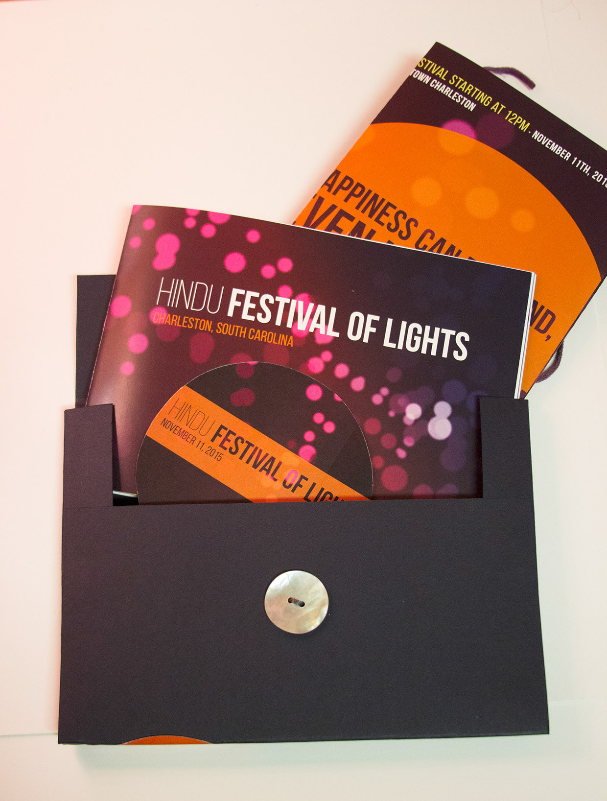
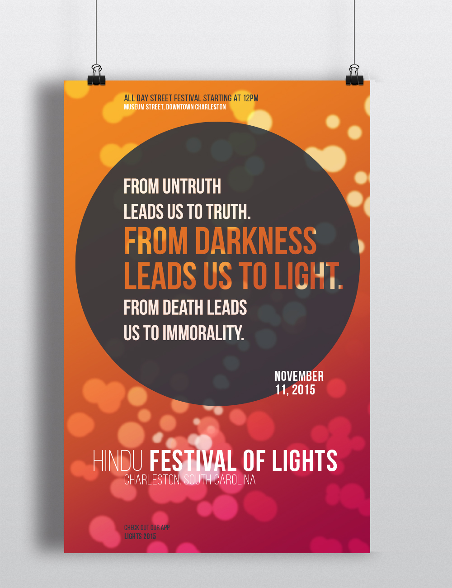
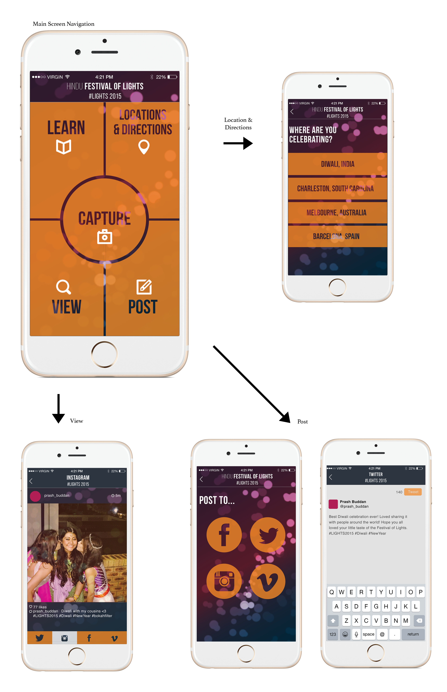
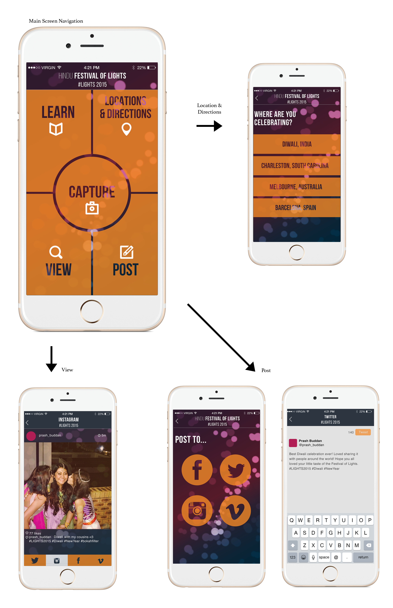

Hindu Festival of Lights
Brief: The objective was to create a short term event brand. The event was the Hindu Festival of Lights in Charleston, South Carolina. Through research I found the event is the New Years for Hindu people and which is celebrated for a period of five days. I focused on how the event would interest and draw the people of Charlston. My marketing was aimed at bringing the community together.
Above: A home mailer with a poster for decoration, a booklet explaining the event, and a sticker. Note shown is an app designed for the event.
Below: Several spreads and close ups of the book.


 

Above: The app was designed in order for people celebrating the event all over the world to post their memories and be able to see eveyone else around the world celebrating all in one platform. This is done by using a specific hashtag.